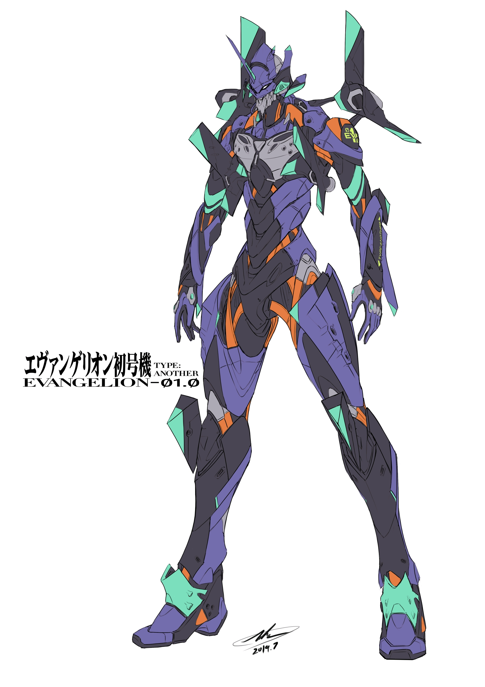
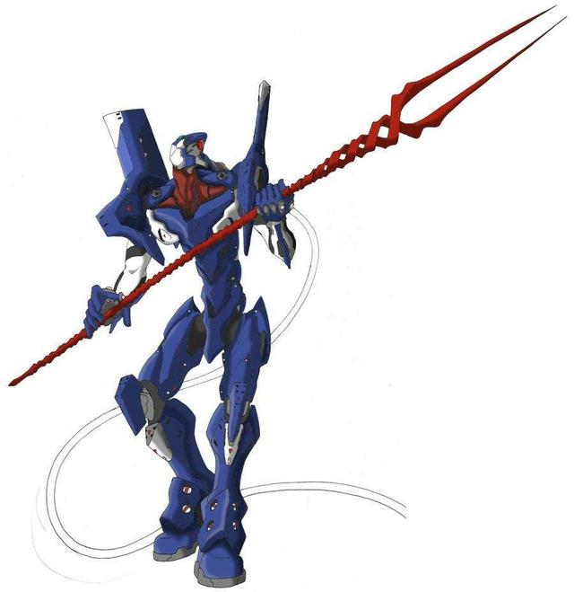
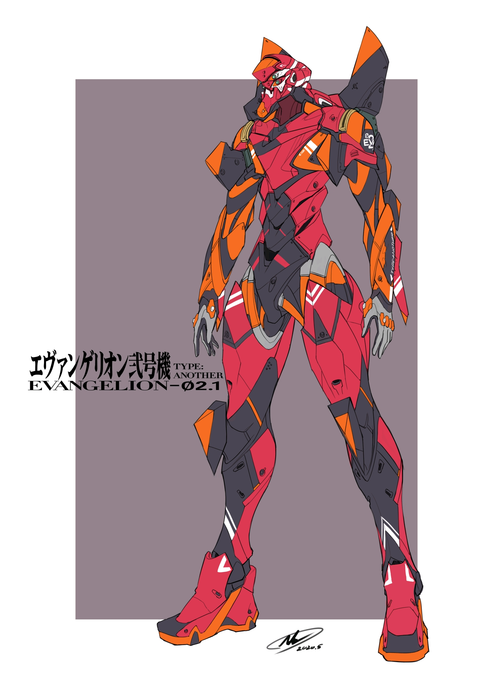

|  |
驾驶员是第三适格者碇真嗣。 初号机装甲为紫色涂装，是首次投入实战的EVA，EVA战斗测试模拟型。 它与驾驶员碇真嗣之间存在的奇妙关系以及在暴走时所发挥出的令人惊讶的战斗力尤其引人注目。 歼灭第十四使徒之后亦完好地保存了下来的初号机；在剧场版中亦加入了战斗；是EVA系列的核心机种；失去朗基努斯之枪后，人类补完计划的重要组成部分。 由碇源堂一直将其与其它两机分开处理且格外的重视，说明它很重要。 EVA就是所谓的“终极泛用人型决战兵器”，一种巨大的人形兵器，是使徒的复制品（初号机是Lilith的复制品，其余皆是Adam的复制品）。 与使徒们同样具“A.T.FIELD”。因为是从使徒复制而成，因而有使徒般毁灭性的战斗能力，同时也是生物科技与精密电子机械组合而成的产物，但是，实质上仍然属于生物的范畴。 EVA的表面皮肤并非是先天生长出来的，而是后面由人类加上去的，实际并不是皮肤也不是葛城美里所说的保护EVA的装甲，而是抑制EVA真正的可怕力量的拘束器。 EVA的暴走是指EVA失控并自行行动的状态，通常会自行向敌人发起攻击。暴走是令初号机迥异于其他EVA的原因之一，似乎每次都是为了救真嗣而暴走。暴走时初号机的攻击模式会完全改变，用拳头及AT力场战斗。速度会有大幅的提升，而且也抛弃了人的形态。攻击变得残暴，主要攻击使徒的要害—核心。其中与夜天使的战斗更令夜天使的身体四分五裂，血流成河。 关于暴走的原因，一般认为是初号机体内的碇唯灵魂为保护真嗣而引起的。 在电视版中总共暴走了三次，该三次的战斗的对象分别为第三使徒水天使，第十二使徒夜天使及第十四使徒力天使。当中暴走目的都是为了保护驾驶员碇真嗣。在第一次的暴走中，初号机表现出娴熟的战斗技巧，而且懂得攻击使徒的核心（当时是初号机第一次的战斗），似乎显示EVA也有自我的思维。第三次的暴走令初号机的行动模式恢复到野兽般的状态，以绝对压倒性的力量下杀死了实力极为强劲的力天使，战斗中初号机将使徒的手臂接在自己的胳膊上，通过自己的细胞再生使使徒的身体长成自己的手，并吞噬了力天使的S2机关。此时的初号机已经拥有了生命果实（来自力天使）和智慧果实（来自Lilinth），成为了等同于神的存在 在剧场版《The End of Evangelion》中，由于真嗣的情绪极度波动、初号机再度发生暴走，并最终引发了第三次冲击。 EVA零号机在试验中也发生过暴走，通常被视为零号机状态不稳定的证据之一。 新剧场版《序》中初号机与TV版一样发生了暴走，新剧场版《破》的最后，初号机的左手被使徒毁掉，觉醒后由“A T Field”幻化出一条手臂，身体原本的荧光绿部分也由绿色变化成红色，头部也出现了象征神的光环，在拯救出绫波丽的灵魂后，丽的灵魂与初号机融为一体，继而引发“近第三次冲击”，这次事件被称为“初号机的觉醒"之后在被从月球而来的EVA六号机停止后，手臂和光环消失。至于觉醒与暴走有何不同还有待考察。 新剧场版Q中，初号机被Wille作为战舰的能源使用。Wille的主要防御作战兵器为WUNDER：以初号机为动力源建造的空中战舰。舰长葛城美里，副舰长赤木律子。由葛城美里主导，赤木律子技术指导和构造，加持良治是组织计划和建造的负责人之一。Wille的目的是消灭EVA，彻底阻止冲击和补完。隶属Wille的明日香和玛丽分别驾驶着EVA02（改）和EVA08展开了"US作战"，最终成功夺回了被NERV封印在卫星轨道上的EVA初号机。 |
|  |
EVA零号机（EVA00 PROTOTYPE /エウンゲリオン零号机） 是动画《新世纪福音战士》中机甲EVA系列最初开发成功的试作品，在第6话之前都作为测试用，以黄色为基本涂装。外形上与EVA系列其它几机不同之处是两肩没有用于装备武器的突出物体。蓝色的改装型于第11话登场，外形除头部之外与EVA二号机无差异。搭乘的驾驶员是第一适格者绫波丽，在故事第23话中她为了保护EVA初号机中的真嗣，启动了自爆程序，零号机与第十六使徒一起消失。 |
|  |
EVA二号机（EVANGELION-02 Production Model），是世上第一台为实战而制造的EVA（代表着二号机除了战斗没有其他任务），也是第一架不需外部指令就能由驾驶员从EVA外部自行启动的EVA（此处指渚薰，由于其使徒的灵魂，可以和复制自第一使徒亚当、并且封闭了内心的EVA二号机产生心理共鸣，由于二号机复制于亚当，被薰称为亚当的分身，李林的仆人）。装备红色B型近距作战装甲，拥有EVA系列中可对应使用武器之最。TV版第8话中，与明日香从德国一起返回NERV本部。二号机于日本设计制造，在德国进行组装和启动实验。EVANGELION-02是首台用于实战的EVA，通常装着红色B型近距作战装甲。拥有EVA系列中可对应使用的武器之最。TV第8话中，与明日香从德国一起返回NERV本部。途中遇到了第六使徒，并在装配着不适于水下作战的B型装甲的不利情况下，歼灭了使徒。在之后的战斗中，二号机又与初号机配合，歼灭了第七使徒；在第九使徒和第十使徒来临之际，与零号机，初号机配合，将其消灭。后期二号机先后被第十三使徒、第十四使徒、第十五使徒击败，明日香也因此精神失常。二号机的驾驶员也因此由第五适格者渚薰代替操作，后来渚薰露出使徒的真面目，试图与亚当结合，引发第三次冲击，初号机被迫与二号机作战，二号机虽然战败但未损及要害。 |